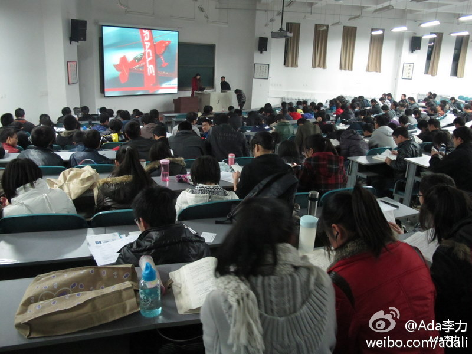
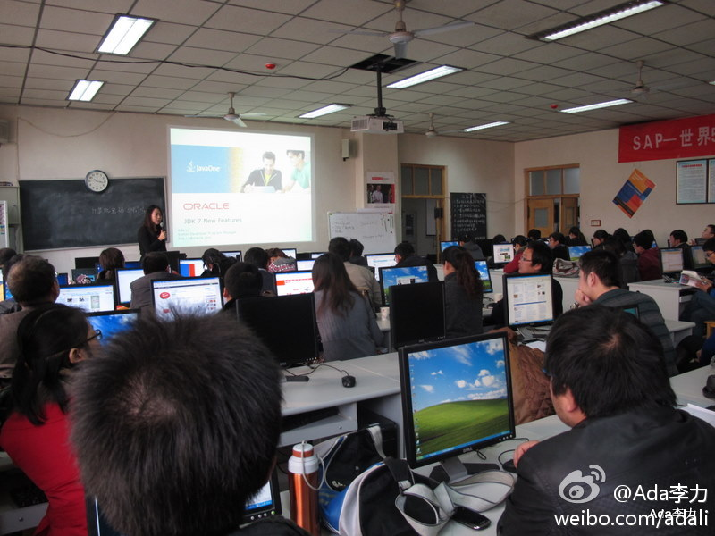

和@Shmilylh 在西安电子科技大学做了个讲座, Livia是介绍Thinkquest大赛, 而我本来打算介绍JavaFX, 和辅导员交流了一下, 说学生很务实, 更愿意听和就业相关的,以及学哪些技术有用. 结果, 我的演讲基本上都在做life coach了. 
西安给老师提供的培训是在西安邮电学院. 和以往历次教师培训一样, 对这种培训很有兴趣的老师往往来自二线院校. 或者是一类大学里, 教学机制, 招生机制比较灵活的学院. 虽然对中国高等教育有诸多不满, 但每次培训中, 还是很欣慰能遇到非常多愿意搞好教育的老师们. 
回到北京已经是半夜, 明俊说姣姣要给我个惊喜, 但不允许爸爸告诉我, 她要亲自告诉我. 早晨, 姣姣上学前, 来床头给我看了她胳膊上的"一道杠", 这就是那个惊喜. 之前杠杠评比中落选, 明俊数落过她, 而戴了"一道杠"的好朋友璿璿又说姣姣比她差, 已经让姣姣憋了很长时间气. 我能理解姣姣对此事的重视.